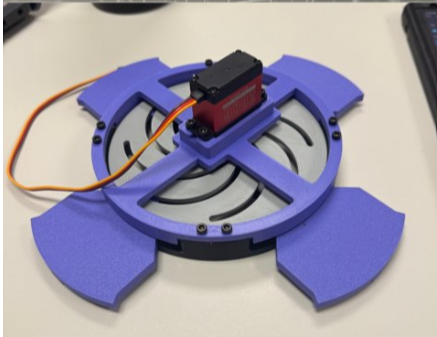
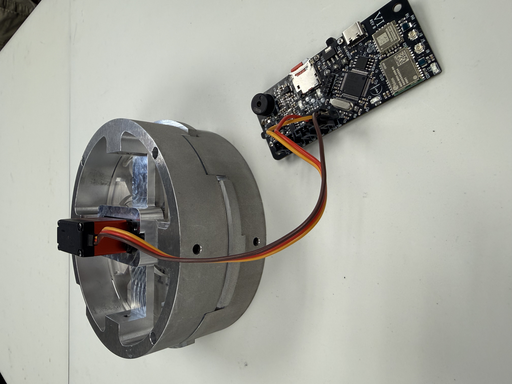
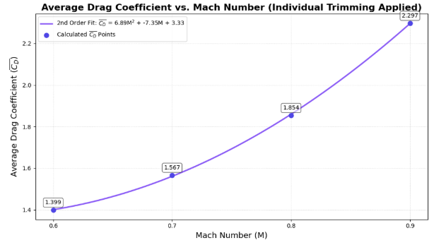
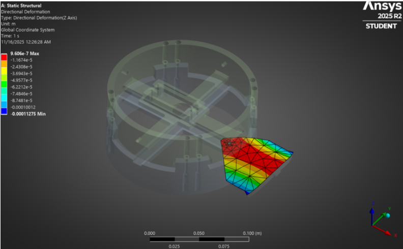

FLIGHT HARDWARE
Air Brakes System
Servo-actuated aerodynamic braking system for active rocket altitude control.
Overview
As part of Longhorn Rocketry's Advanced Research team, I worked on a deployable air brake system designed to help control rocket apogee. The goal was to increase drag during ascent so the rocket could reduce overshoot and get closer to its target altitude.
This project was a good mix of aerospace analysis and real hardware. The air brakes had to create enough drag to matter, fit inside the rocket body, survive flight loads, and deploy reliably using a servo-driven mechanism.
Engineering Goal
The rocket was targeting the 10,000 ft COTS category, while the vehicle design was projected to reach around 12,000 ft. The air brake system was designed to reduce apogee by increasing drag during ascent and help close that altitude gap.
Design Requirements
The air brake system had tight packaging and performance constraints. It needed to fit inside a 6 inch rocket body, stay within a limited vertical height, remain lightweight, and still provide enough deployment authority for active altitude control.
Key Constraints
Design targets included a 6 in. rocket body outer diameter, a 4 in. maximum system height, a 6 lb weight allowance, and a goal of reducing apogee by at least 2,500 ft under maximum deployment.
Those constraints made the design more than just an aerodynamic problem. A larger deployed surface could create more drag, but it also increased structural loading, packaging difficulty, and mechanical complexity. The final design had to balance drag authority, actuation, manufacturability, and strength.
Mechanism Design
The team evaluated several actuation concepts and moved toward a cam-slot style deployment mechanism. This design was attractive because it was low-profile, mechanically simple, and easier to package inside the rocket body compared to more complicated linkage systems.
The early prototype helped prove out the basic motion. It showed that the flaps could deploy from a compact circular assembly and gave the team a physical way to evaluate fit, mechanical play, and servo-driven motion before moving into a more finalized machined version.

Early PETG prototype used to test the cam-slot deployment mechanism, flap motion, and assembly fit before moving toward the machined hardware version.

Machined prototype assembly with servo actuation and electronics used for hardware testing.
Aerodynamic Analysis
I worked on estimating how air brake deployment changed the rocket's drag characteristics across the expected flight regime. The point of this analysis was to connect the geometry of the deployed brake surfaces to the actual flight effect we cared about: reducing apogee by increasing aerodynamic drag.
The drag coefficient trend helped show how drag changed with Mach number and gave us a way to reason about how much braking authority the system could provide during ascent.

Average drag coefficient trend across the tested Mach range, used to estimate how air brake deployment affects aerodynamic drag during flight.
Structural Validation
After estimating the aerodynamic loading, the deployed brake surface needed to be checked structurally. I used FEA to evaluate stress and deformation in the flap geometry under loading. This helped verify that the design had enough strength and stiffness before moving further into manufacturing and hardware testing.

Static structural stress result used to evaluate whether the deployed flap geometry could withstand aerodynamic loading.

Directional deformation result used to check flap stiffness and identify how the deployed surface deflects under load.
Actuation Test
The actuation test verified that the servo and mechanical mechanism could physically deploy the air brakes. This mattered because the analysis only tells part of the story. The system also had to move cleanly as hardware, fit inside the assembly, and deploy without binding.
Servo actuation test demonstrating the air brake deployment mechanism.
What I Worked On
- Contributed to the development of a servo-actuated air brake system for active altitude control.
- Helped evaluate deployment geometry and flap configurations for drag authority and packaging.
- Performed aerodynamic analysis to estimate drag increases across different Mach numbers.
- Used FEA to check stress and deformation in the deployed brake surfaces.
- Supported prototype development, manufacturing planning, and hardware testing.
Technical Highlights
- Connected aerodynamic drag analysis to a real altitude-control objective.
- Used structural simulation to validate flap strength and stiffness before hardware testing.
- Worked through the tradeoff between drag authority, packaging, actuation, and structural loading.
- Helped move the design from an early PETG prototype toward a machined servo-actuated assembly.
Tools Used
ANSYS, CFD, FEA, OpenRocket, CAD, servo actuation, aerodynamic analysis, structural analysis, rocket systems design, hardware prototyping
Engineering Takeaways
This project helped me see how much system-level thinking goes into flight hardware. It was not enough to design a flap that created drag. The design also had to survive the load, fit inside the rocket, actuate with a servo, and integrate with the rest of the vehicle.
The biggest takeaway was learning how to connect analysis to hardware decisions. The drag analysis helped show whether the air brakes would matter in flight, the FEA helped check whether the structure made sense, and the prototype showed what still had to work mechanically in the real assembly.